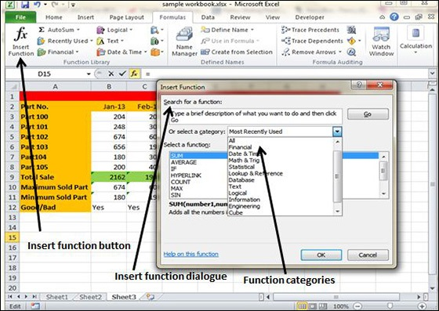

MS Excel has many built in functions, which we can use in our formula. To see all the functions by category, choose Formulas Tab » Insert Function. Then Insert function Dialog appears from which we can choose the function.

Let us see some of the built in functions in MS Excel.
Text Functions
LOWER − Converts all characters in a supplied text string to lower case
UPPER − Converts all characters in a supplied text string to upper case
TRIM − Removes duplicate spaces, and spaces at the start and end of a text string
CONCATENATE − Joins together two or more text strings.
LEFT − Returns a specified number of characters from the start of a supplied text string.
MID − Returns a specified number of characters from the middle of a supplied text string
RIGHT − Returns a specified number of characters from the end of a supplied text string.
LEN − Returns the length of a supplied text string
FIND − Returns the position of a supplied character or text string from within a supplied text string (case-sensitive).
Date & Time
DATE − Returns a date, from a user-supplied year, month and day.
TIME − Returns a time, from a user-supplied hour, minute and second.
DATEVALUE − Converts a text string showing a date, to an integer that represents the date in Excel's date-time code.
TIMEVALUE − Converts a text string showing a time, to a decimal that represents the time in Excel.
NOW − Returns the current date & time.
TODAY − Returns today's date.
Statistical
MAX − Returns the largest value from a list of supplied numbers.
MIN − Returns the smallest value from a list of supplied numbers.
AVERAGE − Returns the Average of a list of supplied numbers.
COUNT − Returns the number of numerical values in a supplied set of cells or values.
COUNTIF − Returns the number of cells (of a supplied range), that satisfies a given criteria.
SUM − Returns the sum of a supplied list of numbers
Logical
AND − Tests a number of user-defined conditions and returns TRUE if ALL of the conditions evaluate to TRUE, or FALSE otherwise
OR − Tests a number of user-defined conditions and returns TRUE if ANY of the conditions evaluate to TRUE, or FALSE otherwise.
NOT − Returns a logical value that is the opposite of a user supplied logical value or expression i.e. returns FALSE if the supplied argument is TRUE and returns TRUE if the supplied argument is FAL
Math & Trig
ABS − Returns the absolute value (i.e. the modulus) of a supplied number.
SIGN − Returns the sign (+1, -1 or 0) of a supplied number.
SQRT − Returns the positive square root of a given number.
MOD − Returns the remainder from a division between two supplied numbers.